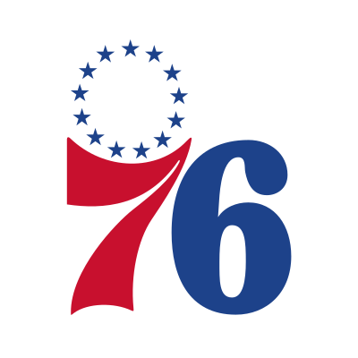

2000-2001 Summary: AI Shoots the Most, Shaq the Best as Lakers Repeat
Champion:  Los Angeles Lakers · Finals MVP: Shaquille O'Neal
Los Angeles Lakers · Finals MVP: Shaquille O'Neal
Share of Attempts
- Three 16.9%
- Midrange 38.0%
- Paint 15.7%
- At the Rim 29.4%
- Three 15.5%
- Midrange 39.3%
- Paint 17.1%
- At the Rim 28.0%
- Three 17.1%
- Midrange 37.7%
- Paint 15.4%
- At the Rim 29.7%
Shot Zones
- Three - shot beyond the 3pt line
- Midrange - shot inside the 3pt line taken outside of the paint
- Paint - shot inside of the paint taken outside of the restricted area
- At the Rim - shot taken inside of the restricted area
Figure Description
- Size - determined by attempts
- Color - determined by efficiency relative to league
- Click a hexagon for player statistics
Percentage points above or below league average: -15%-10%-5%+0%+5%+10%+15%
Shot Types Bar - bar measures the players FG% against the league average (black line), attempts and the corresponding share of attempts shown to the right
Allen Iverson

SGAll advanced stats
| eFG% | .447 | Effective Field Goal Percentage |
|---|---|---|
| TS% | .518 | True Shooting Percentage |
| PER | 24.0 | Player Efficiency Rating |
| USG% | 35.9 | Usage Percentage |
| WS | 11.8 | Win Shares |
| WS/48 | .190 | Win Shares Per 48 Minutes |
| BPM | 6.1 | Box Plus/Minus |
| VORP | 6.1 | Value over Replacement Player |
| 3PAr | .169 | 3-Point Attempt Rate |
| FTr | .397 | Free Throw Attempt Rate |
| ORB% | 1.9 | Offensive Rebound Percentage |
| DRB% | 8.3 | Defensive Rebound Percentage |
| TRB% | 5.2 | Total Rebound Percentage |
| AST% | 23.0 | Assist Percentage |
| STL% | 3.2 | Steal Percentage |
| BLK% | 0.5 | Block Percentage |
| TOV% | 10.0 | Turnover Percentage |
| OWS | 7.3 | Offensive Win Shares |
| DWS | 4.5 | Defensive Win Shares |
| OBPM | 5.0 | Offensive Box Plus/Minus |
| DBPM | 1.1 | Defensive Box Plus/Minus |
Made dunks: the shot types here count 10, Basketball-Reference counts 7. The two sources label some shots differently.
Top-20 seasons: 1996-97 · 1997-98 · 1998-99 · 1999-00 · 2000-01 · 2001-02 · 2002-03 · 2004-05 · 2005-06 · 2006-07 · 2007-08 · Other Allen Iverson Seasons
Jerry Stackhouse
SG
All advanced stats
| eFG% | .445 | Effective Field Goal Percentage |
|---|---|---|
| TS% | .521 | True Shooting Percentage |
| PER | 21.8 | Player Efficiency Rating |
| USG% | 35.2 | Usage Percentage |
| WS | 9.2 | Win Shares |
| WS/48 | .137 | Win Shares Per 48 Minutes |
| BPM | 5.1 | Box Plus/Minus |
| VORP | 5.8 | Value over Replacement Player |
| 3PAr | .245 | 3-Point Attempt Rate |
| FTr | .420 | Free Throw Attempt Rate |
| ORB% | 3.2 | Offensive Rebound Percentage |
| DRB% | 7.3 | Defensive Rebound Percentage |
| TRB% | 5.2 | Total Rebound Percentage |
| AST% | 25.8 | Assist Percentage |
| STL% | 1.5 | Steal Percentage |
| BLK% | 1.2 | Block Percentage |
| TOV% | 12.5 | Turnover Percentage |
| OWS | 6.6 | Offensive Win Shares |
| DWS | 2.6 | Defensive Win Shares |
| OBPM | 5.8 | Offensive Box Plus/Minus |
| DBPM | -0.7 | Defensive Box Plus/Minus |
Made dunks: the shot types here count 86, Basketball-Reference counts 45. The two sources label some shots differently.
Top-20 seasons: 1996-97 · 1999-00 · 2000-01 · 2001-02 · 2002-03 · Other Jerry Stackhouse Seasons
Shaquille O'Neal
 C
C
All advanced stats
| eFG% | .572 | Effective Field Goal Percentage |
|---|---|---|
| TS% | .574 | True Shooting Percentage |
| PER | 30.2 | Player Efficiency Rating |
| USG% | 31.6 | Usage Percentage |
| WS | 14.9 | Win Shares |
| WS/48 | .245 | Win Shares Per 48 Minutes |
| BPM | 7.7 | Box Plus/Minus |
| VORP | 7.1 | Value over Replacement Player |
| 3PAr | .001 | 3-Point Attempt Rate |
| FTr | .684 | Free Throw Attempt Rate |
| ORB% | 11.3 | Offensive Rebound Percentage |
| DRB% | 24.8 | Defensive Rebound Percentage |
| TRB% | 18.1 | Total Rebound Percentage |
| AST% | 18.8 | Assist Percentage |
| STL% | 0.8 | Steal Percentage |
| BLK% | 4.9 | Block Percentage |
| TOV% | 10.5 | Turnover Percentage |
| OWS | 11.1 | Offensive Win Shares |
| DWS | 3.9 | Defensive Win Shares |
| OBPM | 7.0 | Offensive Box Plus/Minus |
| DBPM | 0.7 | Defensive Box Plus/Minus |
Made dunks: the shot types here count 258, Basketball-Reference counts 219. The two sources label some shots differently.
Top-20 seasons: 1997-98 · 1998-99 · 1999-00 · 2000-01 · 2001-02 · 2002-03 · 2003-04 · 2004-05 · Other Shaquille O'Neal Seasons
Kobe Bryant
 SG
SG
All advanced stats
| eFG% | .484 | Effective Field Goal Percentage |
|---|---|---|
| TS% | .552 | True Shooting Percentage |
| PER | 24.5 | Player Efficiency Rating |
| USG% | 31.8 | Usage Percentage |
| WS | 11.3 | Win Shares |
| WS/48 | .196 | Win Shares Per 48 Minutes |
| BPM | 4.8 | Box Plus/Minus |
| VORP | 4.7 | Value over Replacement Player |
| 3PAr | .132 | 3-Point Attempt Rate |
| FTr | .369 | Free Throw Attempt Rate |
| ORB% | 4.3 | Offensive Rebound Percentage |
| DRB% | 11.8 | Defensive Rebound Percentage |
| TRB% | 8.1 | Total Rebound Percentage |
| AST% | 23.0 | Assist Percentage |
| STL% | 2.1 | Steal Percentage |
| BLK% | 1.1 | Block Percentage |
| TOV% | 11.1 | Turnover Percentage |
| OWS | 9.2 | Offensive Win Shares |
| DWS | 2.2 | Defensive Win Shares |
| OBPM | 5.1 | Offensive Box Plus/Minus |
| DBPM | -0.3 | Defensive Box Plus/Minus |
Made dunks: the shot types here count 90, Basketball-Reference counts 49. The two sources label some shots differently.
Top-20 seasons: 1998-99 · 1999-00 · 2000-01 · 2001-02 · 2002-03 · 2003-04 · 2004-05 · 2005-06 · 2006-07 · 2007-08 · 2008-09 · 2009-10 · 2010-11 · 2011-12 · 2012-13 · Other Kobe Bryant Seasons
Vince Carter
SF
All advanced stats
| eFG% | .509 | Effective Field Goal Percentage |
|---|---|---|
| TS% | .551 | True Shooting Percentage |
| PER | 25.0 | Player Efficiency Rating |
| USG% | 30.7 | Usage Percentage |
| WS | 12.9 | Win Shares |
| WS/48 | .208 | Win Shares Per 48 Minutes |
| BPM | 7.6 | Box Plus/Minus |
| VORP | 7.2 | Value over Replacement Player |
| 3PAr | .240 | 3-Point Attempt Rate |
| FTr | .303 | Free Throw Attempt Rate |
| ORB% | 6.5 | Offensive Rebound Percentage |
| DRB% | 9.3 | Defensive Rebound Percentage |
| TRB% | 7.9 | Total Rebound Percentage |
| AST% | 19.2 | Assist Percentage |
| STL% | 2.0 | Steal Percentage |
| BLK% | 1.9 | Block Percentage |
| TOV% | 8.2 | Turnover Percentage |
| OWS | 10.3 | Offensive Win Shares |
| DWS | 2.6 | Defensive Win Shares |
| OBPM | 7.6 | Offensive Box Plus/Minus |
| DBPM | 0.1 | Defensive Box Plus/Minus |
Made dunks: the shot types here count 107, Basketball-Reference counts 44. The two sources label some shots differently.
Top-20 seasons: 1999-00 · 2000-01 · 2001-02 · 2003-04 · 2004-05 · 2005-06 · 2006-07 · 2007-08 · 2008-09 · Other Vince Carter Seasons
Chris Webber
PF
All advanced stats
| eFG% | .481 | Effective Field Goal Percentage |
|---|---|---|
| TS% | .516 | True Shooting Percentage |
| PER | 24.7 | Player Efficiency Rating |
| USG% | 31.6 | Usage Percentage |
| WS | 11.0 | Win Shares |
| WS/48 | .186 | Win Shares Per 48 Minutes |
| BPM | 5.5 | Box Plus/Minus |
| VORP | 5.3 | Value over Replacement Player |
| 3PAr | .017 | 3-Point Attempt Rate |
| FTr | .282 | Free Throw Attempt Rate |
| ORB% | 7.0 | Offensive Rebound Percentage |
| DRB% | 22.1 | Defensive Rebound Percentage |
| TRB% | 14.8 | Total Rebound Percentage |
| AST% | 20.6 | Assist Percentage |
| STL% | 1.7 | Steal Percentage |
| BLK% | 2.8 | Block Percentage |
| TOV% | 9.6 | Turnover Percentage |
| OWS | 5.8 | Offensive Win Shares |
| DWS | 5.2 | Defensive Win Shares |
| OBPM | 4.0 | Offensive Box Plus/Minus |
| DBPM | 1.4 | Defensive Box Plus/Minus |
Made dunks: the shot types here count 143, Basketball-Reference counts 100. The two sources label some shots differently.
Top-20 seasons: 1997-98 · 1999-00 · 2000-01 · 2002-03 · Other Chris Webber Seasons
Tracy McGrady
SG
All advanced stats
| eFG% | .474 | Effective Field Goal Percentage |
|---|---|---|
| TS% | .521 | True Shooting Percentage |
| PER | 24.9 | Player Efficiency Rating |
| USG% | 31.2 | Usage Percentage |
| WS | 12.2 | Win Shares |
| WS/48 | .189 | Win Shares Per 48 Minutes |
| BPM | 7.0 | Box Plus/Minus |
| VORP | 7.0 | Value over Replacement Player |
| 3PAr | .096 | 3-Point Attempt Rate |
| FTr | .340 | Free Throw Attempt Rate |
| ORB% | 6.7 | Offensive Rebound Percentage |
| DRB% | 14.3 | Defensive Rebound Percentage |
| TRB% | 10.4 | Total Rebound Percentage |
| AST% | 22.8 | Assist Percentage |
| STL% | 1.9 | Steal Percentage |
| BLK% | 2.8 | Block Percentage |
| TOV% | 9.1 | Turnover Percentage |
| OWS | 8.3 | Offensive Win Shares |
| DWS | 3.9 | Defensive Win Shares |
| OBPM | 6.5 | Offensive Box Plus/Minus |
| DBPM | 0.5 | Defensive Box Plus/Minus |
Made dunks: the shot types here count 117, Basketball-Reference counts 80. The two sources label some shots differently.
Top-20 seasons: 2000-01 · 2001-02 · 2002-03 · 2003-04 · 2004-05 · 2006-07 · 2007-08 · Other Tracy McGrady Seasons
Paul Pierce
 SF
SF
All advanced stats
| eFG% | .503 | Effective Field Goal Percentage |
|---|---|---|
| TS% | .563 | True Shooting Percentage |
| PER | 22.3 | Player Efficiency Rating |
| USG% | 30.6 | Usage Percentage |
| WS | 10.4 | Win Shares |
| WS/48 | .160 | Win Shares Per 48 Minutes |
| BPM | 4.4 | Box Plus/Minus |
| VORP | 5.0 | Value over Replacement Player |
| 3PAr | .254 | 3-Point Attempt Rate |
| FTr | .488 | Free Throw Attempt Rate |
| ORB% | 3.4 | Offensive Rebound Percentage |
| DRB% | 16.7 | Defensive Rebound Percentage |
| TRB% | 9.8 | Total Rebound Percentage |
| AST% | 16.9 | Assist Percentage |
| STL% | 2.3 | Steal Percentage |
| BLK% | 1.7 | Block Percentage |
| TOV% | 12.5 | Turnover Percentage |
| OWS | 6.9 | Offensive Win Shares |
| DWS | 3.5 | Defensive Win Shares |
| OBPM | 4.5 | Offensive Box Plus/Minus |
| DBPM | -0.1 | Defensive Box Plus/Minus |
Made dunks: the shot types here count 34, Basketball-Reference counts 16. The two sources label some shots differently.
Top-20 seasons: 2000-01 · 2001-02 · 2002-03 · 2003-04 · 2004-05 · 2005-06 · 2008-09 · 2011-12 · 2012-13 · Other Paul Pierce Seasons
Antawn Jamison
 SF
SF
All advanced stats
| eFG% | .459 | Effective Field Goal Percentage |
|---|---|---|
| TS% | .499 | True Shooting Percentage |
| PER | 19.0 | Player Efficiency Rating |
| USG% | 27.9 | Usage Percentage |
| WS | 6.7 | Win Shares |
| WS/48 | .094 | Win Shares Per 48 Minutes |
| BPM | 0.8 | Box Plus/Minus |
| VORP | 2.3 | Value over Replacement Player |
| 3PAr | .113 | 3-Point Attempt Rate |
| FTr | .295 | Free Throw Attempt Rate |
| ORB% | 8.1 | Offensive Rebound Percentage |
| DRB% | 14.8 | Defensive Rebound Percentage |
| TRB% | 11.2 | Total Rebound Percentage |
| AST% | 9.5 | Assist Percentage |
| STL% | 1.7 | Steal Percentage |
| BLK% | 0.6 | Block Percentage |
| TOV% | 8.9 | Turnover Percentage |
| OWS | 5.4 | Offensive Win Shares |
| DWS | 1.3 | Defensive Win Shares |
| OBPM | 2.8 | Offensive Box Plus/Minus |
| DBPM | -2.0 | Defensive Box Plus/Minus |
Made dunks: the shot types here count 25, Basketball-Reference counts 22. The two sources label some shots differently.
Top-20 seasons: 2000-01 · 2002-03 · 2005-06 · 2007-08 · 2008-09 · Other Antawn Jamison Seasons
Stephon Marbury
 PG
PG
All advanced stats
| eFG% | .484 | Effective Field Goal Percentage |
|---|---|---|
| TS% | .540 | True Shooting Percentage |
| PER | 22.7 | Player Efficiency Rating |
| USG% | 29.7 | Usage Percentage |
| WS | 7.8 | Win Shares |
| WS/48 | .147 | Win Shares Per 48 Minutes |
| BPM | 4.3 | Box Plus/Minus |
| VORP | 4.1 | Value over Replacement Player |
| 3PAr | .262 | 3-Point Attempt Rate |
| FTr | .359 | Free Throw Attempt Rate |
| ORB% | 2.3 | Offensive Rebound Percentage |
| DRB% | 7.0 | Defensive Rebound Percentage |
| TRB% | 4.6 | Total Rebound Percentage |
| AST% | 40.8 | Assist Percentage |
| STL% | 1.6 | Steal Percentage |
| BLK% | 0.1 | Block Percentage |
| TOV% | 11.8 | Turnover Percentage |
| OWS | 7.2 | Offensive Win Shares |
| DWS | 0.7 | Defensive Win Shares |
| OBPM | 5.9 | Offensive Box Plus/Minus |
| DBPM | -1.6 | Defensive Box Plus/Minus |
Made dunks: the shot types here count 7, Basketball-Reference counts 2. The two sources label some shots differently.
Top-20 seasons: 1998-99 · 1999-00 · 2000-01 · 2001-02 · 2002-03 · 2003-04 · 2004-05 · Other Stephon Marbury Seasons
Antoine Walker
 PF
PF
All advanced stats
| eFG% | .478 | Effective Field Goal Percentage |
|---|---|---|
| TS% | .505 | True Shooting Percentage |
| PER | 18.9 | Player Efficiency Rating |
| USG% | 29.1 | Usage Percentage |
| WS | 6.6 | Win Shares |
| WS/48 | .093 | Win Shares Per 48 Minutes |
| BPM | 3.0 | Box Plus/Minus |
| VORP | 4.3 | Value over Replacement Player |
| 3PAr | .351 | 3-Point Attempt Rate |
| FTr | .202 | Free Throw Attempt Rate |
| ORB% | 5.0 | Offensive Rebound Percentage |
| DRB% | 20.4 | Defensive Rebound Percentage |
| TRB% | 12.3 | Total Rebound Percentage |
| AST% | 26.8 | Assist Percentage |
| STL% | 2.1 | Steal Percentage |
| BLK% | 1.1 | Block Percentage |
| TOV% | 13.8 | Turnover Percentage |
| OWS | 2.7 | Offensive Win Shares |
| DWS | 3.8 | Defensive Win Shares |
| OBPM | 3.5 | Offensive Box Plus/Minus |
| DBPM | -0.5 | Defensive Box Plus/Minus |
Made dunks: the shot types here count 23, Basketball-Reference counts 19. The two sources label some shots differently.
Top-20 seasons: 1997-98 · 1999-00 · 2000-01 · 2001-02 · Other Antoine Walker Seasons
Karl Malone
 PF
PF
All advanced stats
| eFG% | .499 | Effective Field Goal Percentage |
|---|---|---|
| TS% | .572 | True Shooting Percentage |
| PER | 24.7 | Player Efficiency Rating |
| USG% | 30.0 | Usage Percentage |
| WS | 13.1 | Win Shares |
| WS/48 | .217 | Win Shares Per 48 Minutes |
| BPM | 6.6 | Box Plus/Minus |
| VORP | 6.3 | Value over Replacement Player |
| 3PAr | .004 | 3-Point Attempt Rate |
| FTr | .503 | Free Throw Attempt Rate |
| ORB% | 5.0 | Offensive Rebound Percentage |
| DRB% | 23.3 | Defensive Rebound Percentage |
| TRB% | 14.3 | Total Rebound Percentage |
| AST% | 24.1 | Assist Percentage |
| STL% | 1.7 | Steal Percentage |
| BLK% | 1.7 | Block Percentage |
| TOV% | 12.9 | Turnover Percentage |
| OWS | 9.1 | Offensive Win Shares |
| DWS | 4.0 | Defensive Win Shares |
| OBPM | 5.5 | Offensive Box Plus/Minus |
| DBPM | 1.1 | Defensive Box Plus/Minus |
Made dunks: the shot types here count 36, Basketball-Reference counts 29. The two sources label some shots differently.
Top-20 seasons: 1996-97 · 1997-98 · 1998-99 · 1999-00 · 2000-01 · 2001-02 · Other Karl Malone Seasons
Gary Payton
PG
All advanced stats
| eFG% | .488 | Effective Field Goal Percentage |
|---|---|---|
| TS% | .522 | True Shooting Percentage |
| PER | 22.1 | Player Efficiency Rating |
| USG% | 27.2 | Usage Percentage |
| WS | 10.8 | Win Shares |
| WS/48 | .160 | Win Shares Per 48 Minutes |
| BPM | 4.0 | Box Plus/Minus |
| VORP | 4.9 | Value over Replacement Player |
| 3PAr | .171 | 3-Point Attempt Rate |
| FTr | .223 | Free Throw Attempt Rate |
| ORB% | 2.6 | Offensive Rebound Percentage |
| DRB% | 10.1 | Defensive Rebound Percentage |
| TRB% | 6.4 | Total Rebound Percentage |
| AST% | 36.6 | Assist Percentage |
| STL% | 2.1 | Steal Percentage |
| BLK% | 0.6 | Block Percentage |
| TOV% | 10.7 | Turnover Percentage |
| OWS | 9.1 | Offensive Win Shares |
| DWS | 1.7 | Defensive Win Shares |
| OBPM | 4.7 | Offensive Box Plus/Minus |
| DBPM | -0.7 | Defensive Box Plus/Minus |
Top-20 seasons: 1996-97 · 1997-98 · 1998-99 · 1999-00 · 2000-01 · 2001-02 · Other Gary Payton Seasons
Tim Duncan
 PF
PF
All advanced stats
| eFG% | .502 | Effective Field Goal Percentage |
|---|---|---|
| TS% | .536 | True Shooting Percentage |
| PER | 23.8 | Player Efficiency Rating |
| USG% | 28.7 | Usage Percentage |
| WS | 13.2 | Win Shares |
| WS/48 | .200 | Win Shares Per 48 Minutes |
| BPM | 4.7 | Box Plus/Minus |
| VORP | 5.4 | Value over Replacement Player |
| 3PAr | .019 | 3-Point Attempt Rate |
| FTr | .471 | Free Throw Attempt Rate |
| ORB% | 9.7 | Offensive Rebound Percentage |
| DRB% | 25.1 | Defensive Rebound Percentage |
| TRB% | 17.8 | Total Rebound Percentage |
| AST% | 15.3 | Assist Percentage |
| STL% | 1.2 | Steal Percentage |
| BLK% | 4.2 | Block Percentage |
| TOV% | 12.5 | Turnover Percentage |
| OWS | 6.2 | Offensive Win Shares |
| DWS | 7.1 | Defensive Win Shares |
| OBPM | 2.9 | Offensive Box Plus/Minus |
| DBPM | 1.8 | Defensive Box Plus/Minus |
Made dunks: the shot types here count 82, Basketball-Reference counts 67. The two sources label some shots differently.
Top-20 seasons: 1997-98 · 1998-99 · 1999-00 · 2000-01 · 2001-02 · 2002-03 · 2003-04 · 2006-07 · Other Tim Duncan Seasons
Glenn Robinson
 SF
SF
All advanced stats
| eFG% | .487 | Effective Field Goal Percentage |
|---|---|---|
| TS% | .525 | True Shooting Percentage |
| PER | 20.1 | Player Efficiency Rating |
| USG% | 29.2 | Usage Percentage |
| WS | 6.7 | Win Shares |
| WS/48 | .114 | Win Shares Per 48 Minutes |
| BPM | 1.3 | Box Plus/Minus |
| VORP | 2.4 | Value over Replacement Player |
| 3PAr | .126 | 3-Point Attempt Rate |
| FTr | .210 | Free Throw Attempt Rate |
| ORB% | 5.0 | Offensive Rebound Percentage |
| DRB% | 16.1 | Defensive Rebound Percentage |
| TRB% | 10.6 | Total Rebound Percentage |
| AST% | 16.5 | Assist Percentage |
| STL% | 1.6 | Steal Percentage |
| BLK% | 1.6 | Block Percentage |
| TOV% | 12.1 | Turnover Percentage |
| OWS | 4.2 | Offensive Win Shares |
| DWS | 2.5 | Defensive Win Shares |
| OBPM | 2.3 | Offensive Box Plus/Minus |
| DBPM | -1.0 | Defensive Box Plus/Minus |
Made dunks: the shot types here count 50, Basketball-Reference counts 40. The two sources label some shots differently.
Top-20 seasons: 1996-97 · 1998-99 · 1999-00 · 2000-01 · 2002-03 · Other Glenn Robinson Seasons
Kevin Garnett
 PF
PF
All advanced stats
| eFG% | .484 | Effective Field Goal Percentage |
|---|---|---|
| TS% | .531 | True Shooting Percentage |
| PER | 23.9 | Player Efficiency Rating |
| USG% | 27.0 | Usage Percentage |
| WS | 11.8 | Win Shares |
| WS/48 | .176 | Win Shares Per 48 Minutes |
| BPM | 6.0 | Box Plus/Minus |
| VORP | 6.4 | Value over Replacement Player |
| 3PAr | .045 | 3-Point Attempt Rate |
| FTr | .317 | Free Throw Attempt Rate |
| ORB% | 7.7 | Offensive Rebound Percentage |
| DRB% | 25.3 | Defensive Rebound Percentage |
| TRB% | 16.4 | Total Rebound Percentage |
| AST% | 21.8 | Assist Percentage |
| STL% | 1.8 | Steal Percentage |
| BLK% | 3.2 | Block Percentage |
| TOV% | 12.0 | Turnover Percentage |
| OWS | 7.0 | Offensive Win Shares |
| DWS | 4.8 | Defensive Win Shares |
| OBPM | 4.5 | Offensive Box Plus/Minus |
| DBPM | 1.4 | Defensive Box Plus/Minus |
Made dunks: the shot types here count 110, Basketball-Reference counts 68. The two sources label some shots differently.
Top-20 seasons: 1998-99 · 1999-00 · 2000-01 · 2001-02 · 2002-03 · 2003-04 · 2004-05 · 2005-06 · 2006-07 · Other Kevin Garnett Seasons
Ray Allen
 SG
SG
All advanced stats
| eFG% | .557 | Effective Field Goal Percentage |
|---|---|---|
| TS% | .610 | True Shooting Percentage |
| PER | 22.9 | Player Efficiency Rating |
| USG% | 24.4 | Usage Percentage |
| WS | 13.7 | Win Shares |
| WS/48 | .211 | Win Shares Per 48 Minutes |
| BPM | 5.5 | Box Plus/Minus |
| VORP | 5.9 | Value over Replacement Player |
| 3PAr | .357 | 3-Point Attempt Rate |
| FTr | .299 | Free Throw Attempt Rate |
| ORB% | 3.7 | Offensive Rebound Percentage |
| DRB% | 11.8 | Defensive Rebound Percentage |
| TRB% | 7.8 | Total Rebound Percentage |
| AST% | 20.4 | Assist Percentage |
| STL% | 2.1 | Steal Percentage |
| BLK% | 0.5 | Block Percentage |
| TOV% | 12.1 | Turnover Percentage |
| OWS | 11.5 | Offensive Win Shares |
| DWS | 2.2 | Defensive Win Shares |
| OBPM | 5.7 | Offensive Box Plus/Minus |
| DBPM | -0.3 | Defensive Box Plus/Minus |
Made dunks: the shot types here count 56, Basketball-Reference counts 31. The two sources label some shots differently.
Top-20 seasons: 1997-98 · 1999-00 · 2000-01 · 2001-02 · 2002-03 · 2004-05 · 2005-06 · 2006-07 · Other Ray Allen Seasons
Dirk Nowitzki
 PF
PF
All advanced stats
| eFG% | .534 | Effective Field Goal Percentage |
|---|---|---|
| TS% | .601 | True Shooting Percentage |
| PER | 22.8 | Player Efficiency Rating |
| USG% | 23.8 | Usage Percentage |
| WS | 14.6 | Win Shares |
| WS/48 | .224 | Win Shares Per 48 Minutes |
| BPM | 5.4 | Box Plus/Minus |
| VORP | 5.9 | Value over Replacement Player |
| 3PAr | .313 | 3-Point Attempt Rate |
| FTr | .431 | Free Throw Attempt Rate |
| ORB% | 4.4 | Offensive Rebound Percentage |
| DRB% | 22.1 | Defensive Rebound Percentage |
| TRB% | 13.5 | Total Rebound Percentage |
| AST% | 9.4 | Assist Percentage |
| STL% | 1.3 | Steal Percentage |
| BLK% | 2.3 | Block Percentage |
| TOV% | 9.5 | Turnover Percentage |
| OWS | 10.3 | Offensive Win Shares |
| DWS | 4.3 | Defensive Win Shares |
| OBPM | 4.9 | Offensive Box Plus/Minus |
| DBPM | 0.5 | Defensive Box Plus/Minus |
Made dunks: the shot types here count 53, Basketball-Reference counts 44. The two sources label some shots differently.
Top-20 seasons: 2000-01 · 2001-02 · 2002-03 · 2003-04 · 2004-05 · 2005-06 · 2006-07 · 2007-08 · 2008-09 · 2009-10 · 2010-11 · 2011-12 · 2013-14 · Other Dirk Nowitzki Seasons
Michael Finley
 SF
SF
All advanced stats
| eFG% | .487 | Effective Field Goal Percentage |
|---|---|---|
| TS% | .521 | True Shooting Percentage |
| PER | 18.2 | Player Efficiency Rating |
| USG% | 24.9 | Usage Percentage |
| WS | 8.5 | Win Shares |
| WS/48 | .119 | Win Shares Per 48 Minutes |
| BPM | 1.9 | Box Plus/Minus |
| VORP | 3.4 | Value over Replacement Player |
| 3PAr | .169 | 3-Point Attempt Rate |
| FTr | .209 | Free Throw Attempt Rate |
| ORB% | 3.6 | Offensive Rebound Percentage |
| DRB% | 10.0 | Defensive Rebound Percentage |
| TRB% | 6.9 | Total Rebound Percentage |
| AST% | 18.3 | Assist Percentage |
| STL% | 1.8 | Steal Percentage |
| BLK% | 0.7 | Block Percentage |
| TOV% | 10.1 | Turnover Percentage |
| OWS | 5.6 | Offensive Win Shares |
| DWS | 2.9 | Defensive Win Shares |
| OBPM | 2.4 | Offensive Box Plus/Minus |
| DBPM | -0.5 | Defensive Box Plus/Minus |
Made dunks: the shot types here count 66, Basketball-Reference counts 59. The two sources label some shots differently.
Top-20 seasons: 1997-98 · 1998-99 · 1999-00 · 2000-01 · 2001-02 · Other Michael Finley Seasons
Antonio McDyess
 PF
PF
All advanced stats
| eFG% | .495 | Effective Field Goal Percentage |
|---|---|---|
| TS% | .538 | True Shooting Percentage |
| PER | 22.0 | Player Efficiency Rating |
| USG% | 26.5 | Usage Percentage |
| WS | 7.8 | Win Shares |
| WS/48 | .146 | Win Shares Per 48 Minutes |
| BPM | 1.7 | Box Plus/Minus |
| VORP | 2.4 | Value over Replacement Player |
| 3PAr | .000 | 3-Point Attempt Rate |
| FTr | .373 | Free Throw Attempt Rate |
| ORB% | 10.1 | Offensive Rebound Percentage |
| DRB% | 26.1 | Defensive Rebound Percentage |
| TRB% | 18.0 | Total Rebound Percentage |
| AST% | 10.8 | Assist Percentage |
| STL% | 0.9 | Steal Percentage |
| BLK% | 2.7 | Block Percentage |
| TOV% | 10.7 | Turnover Percentage |
| OWS | 5.2 | Offensive Win Shares |
| DWS | 2.6 | Defensive Win Shares |
| OBPM | 2.5 | Offensive Box Plus/Minus |
| DBPM | -0.8 | Defensive Box Plus/Minus |
Made dunks: the shot types here count 147, Basketball-Reference counts 110. The two sources label some shots differently.
Top-20 seasons: 1998-99 · 2000-01 · Other Antonio McDyess Seasons
Sources for this season
| What | From |
|---|---|
| NBA.com shot chart detail, 2000-01 regular season | shufinskiy/nba_data (mirror of stats.nba.com) |
| 2000-01 NBA Player Stats: Per Game | |
| 2000-01 NBA Player Stats: Totals | |
| 2000-01 NBA Player Stats: Shooting | |
| 2000-01 NBA Player Stats: Advanced | |
| 2001 NBA Playoffs Summary |
The qualifying rule, as the sources state it:
| “To qualify for minutes per game, points per game, total rebounds per game, assists per game, steals per game, or blocks per game the following minimums are required” | Basketball-Reference |
| “1999-00 to 2010-11 NBA 70 G or 2000 MP/1400 PTS/800 TRB/400 AST/125 STL/100 BLK” | Basketball-Reference |
2 of the 20 qualified by points rather than games: Kobe Bryant, Stephon Marbury.
Checks this season passed
Every map above was built by a script that runs these checks first and refuses a season that fails one.
| Check | Result | Detail |
|---|---|---|
| Source files match the fingerprints (sha256) taken at download | pass | 5/5 |
| Every shot category in the data is a known value | pass | 191662 rows, all values known |
| Shot positions reproduce the recorded shot distances | pass | frame feet, y0 = 5.25 mirror units; 100.00% of half-court shots within 1 ft of SHOT_DISTANCE |
| Left-corner threes land on the left of the court | pass | mean x: Left Corner 3 -23.3, Right Corner 3 +23.1 |
| The qualifying rule is quoted from a saved source | pass | 70 games or 1400 points; quotes found 2/2 |
| Scorers who qualified by points rather than games (reported, not a check) | note | in the top 20 by points only (under 70 games, at least 1400 points): ['Kobe Bryant', 'Stephon Marbury'] |
| Players outside the qualifier who would reach 20th (reported, not added) | note | no player under the minimum would reach 20th by points / min_games |
| NBA.com's exception: no player outside the qualifier would have led the league | pass | rule quoted from nba-stat-minimums; no player under the minimum would lead (Allen Iverson 31.1) |
| All 20 scorers are found in the shot data | pass | 20/20 joined |
| Each scorer is exactly one NBA.com player id (what links his seasons) | pass | 20/20 names match exactly one NBA.com player id |
| Each scorer's attempts match Basketball-Reference, within 0.5% | pass | 20/20 exact; 0 short by 0 shots, worst 0.00% (limit 0.5%) |
| Each scorer's advanced stats come from the regular-season table, games matching the per-game page | pass | 20/20 joined from table 'advanced' (regular season); games agree with the per-game page |
| eFG% recomputed from the shot data agrees with Basketball-Reference | pass | 20/20 recomputed from the shot data; worst gap 0.0005 against Basketball-Reference (limit 0.0005 plus 1.5 x each player's shortfall share) |
| League shooting by distance matches Basketball-Reference | pass | largest gap 0.000 (tolerance 0.010) |
| Every half-court shot is counted exactly once | pass | 191364 hexagon attempts = 191364 half-court shots |
| A known case: one shooter's three-point percentage matches Basketball-Reference | pass | mirror 0.3665 (221 of 603); Basketball-Reference .367 (221 of 603) |
| Each scorer's shot-type counts add up to his attempts | pass | 20/20: each player's shot-type counts add up to his attempts in the shot data |
| Made dunks from the shot types agree with Basketball-Reference's count | fail | OVER LIMIT [('Allen Iverson', 10, 7, 2), ('Jerry Stackhouse', 86, 45, 2), ("Shaquille O'Neal", 258, 219, 2), ('Kobe Bryant', 90, 49, 2), ('Vince Carter', 107, 44, 2), ('Chris Webber', 143, 100, 2), ('Tracy McGrady', 117, 80, 2), ('Paul Pierce', 34, 16, 2), ('Antawn Jamison', 25, 22, 2), ('Stephon Marbury', 7, 2, 2), ('Antoine Walker', 23, 19, 2), ('Karl Malone', 36, 29, 2), ('Tim Duncan', 82, 67, 2), ('Glenn Robinson', 50, 40, 2), ('Kevin Garnett', 110, 68, 2), ('Ray Allen', 56, 31, 2), ('Dirk Nowitzki', 53, 44, 2), ('Michael Finley', 66, 59, 2), ('Antonio McDyess', 147, 110, 2)] |
| How many shot-type labels NBA.com used this season (reported, not a check) | note | 25 distinct labels this season; 'Jump Shot' is 65.1% of the league's attempts |
The dunk check does not block a season. It compares two counts of the same thing from the same league play-by-play, and across all 600 player-seasons built it agrees exactly for 559 and within 2 for 580. Where it disagrees by more, the player's card says so.
What the advanced stats mean
Each definition is Basketball-Reference's own, taken from the column headers of the page the numbers come from. For PER, Win Shares, BPM and VORP in more depth, see this page.
- eFG%: Effective Field Goal Percentage
- This statistic adjusts for the fact that a 3-point field goal is worth one more point than a 2-point field goal.
- TS%: True Shooting Percentage
- A measure of shooting efficiency that takes into account 2-point field goals, 3-point field goals, and free throws.
- PER: Player Efficiency Rating
- A measure of per-minute production standardized such that the league average is 15.
- USG%: Usage Percentage
- An estimate of the percentage of team plays used by a player while they were on the floor.
- WS: Win Shares
- An estimate of the number of wins contributed by a player.
- WS/48: Win Shares Per 48 Minutes
- An estimate of the number of wins contributed by a player per 48 minutes (league average is approximately .100)
- BPM: Box Plus/Minus
- A box score estimate of the points per 100 possessions a player contributed above a league-average player, translated to an average team.
- VORP: Value over Replacement Player
- A box score estimate of the points per 100 TEAM possessions that a player contributed above a replacement-level (-2.0) player, translated to an average team and prorated to an 82-game season. Multiply by 2.70 to convert to wins over replacement.
- 3PAr: 3-Point Attempt Rate
- Percentage of FG Attempts from 3-Point Range
- FTr: Free Throw Attempt Rate
- Number of FT Attempts Per FG Attempt
- ORB%: Offensive Rebound Percentage
- An estimate of the percentage of available offensive rebounds a player grabbed while they were on the floor.
- DRB%: Defensive Rebound Percentage
- An estimate of the percentage of available defensive rebounds a player grabbed while they were on the floor.
- TRB%: Total Rebound Percentage
- An estimate of the percentage of available rebounds a player grabbed while they were on the floor.
- AST%: Assist Percentage
- An estimate of the percentage of teammate field goals a player assisted while they were on the floor.
- STL%: Steal Percentage
- An estimate of the percentage of opponent possessions that end with a steal by the player while they were on the floor.
- BLK%: Block Percentage
- An estimate of the percentage of opponent two-point field goal attempts blocked by the player while they were on the floor.
- TOV%: Turnover Percentage
- An estimate of turnovers committed per 100 plays.
- OWS: Offensive Win Shares
- An estimate of the number of wins contributed by a player due to offense.
- DWS: Defensive Win Shares
- An estimate of the number of wins contributed by a player due to defense.
- OBPM: Offensive Box Plus/Minus
- A box score estimate of the offensive points per 100 possessions a player contributed above a league-average player, translated to an average team.
- DBPM: Defensive Box Plus/Minus
- A box score estimate of the defensive points per 100 possessions a player contributed above a league-average player, translated to an average team.
* The shot-type charts show each player's 8 most-used shot types, leaving out any with fewer than 10 attempts.